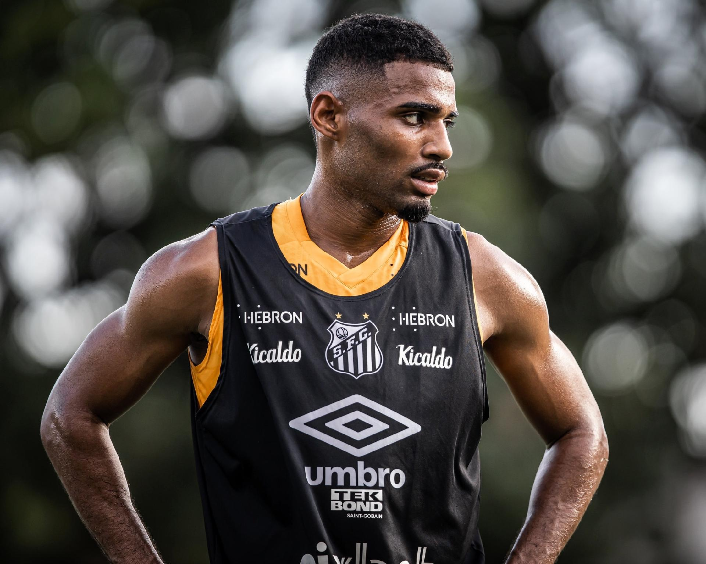

A Historia
O Santos Futebol Clube foi fundado no dia 14 de abril de 1912, por iniciativa de três esportistas da cidade, Francisco Raymundo Marques, Mário Ferraz de Campos e Argemiro de Souza Júnior, que convocaram uma assembleia na sede do Clube Concórdia para a criação de um time de futebol. Durante a reunião, surgiu a dúvida quanto ao nome que seria dado a essa agremiação, várias sugestões apareceram como, Brasil Atlético, Euterpe e Concórdia, mas os participantes da reunião decidiram por unanimidade a proposta de Edmundo Jorge de Araújo: a denominação Santos Foot-Ball Club.
Principais Títulos
- Internacionais
- Nacionais
- Interestaduais
- Estaduais
Principais Jogadores

Pelé
Edson Arantes do Nascimento, o Pelé, é um ex-esportista brasileiro, considerado o maior jogador da história do futebol, personalidade mundial do esporte e popularmente chamado de Rei do Futebol. Nasceu na cidade de Três Corações, em Minas Gerais, no dia 23 de outubro de 1940. É filho de João Ramos do Nascimento (também ex-jogador de futebol, conhecido como Dondinho) e Celeste Arantes do Nascimento. Morreu aos 82 anos, em 29 de dezembro de 2022, em São Paulo.

Neymar
Neymar (1992) é um futebolista brasileiro, considerado um dos maiores da história. Ganhou diversos títulos jogando pelo Santos Futebol Clube, onde iniciou sua carreira aos 11 anos de idade. Sua posição é atacante, atuando como ponta-esquerda. Neymar jogou em diversos times. Seu mais recente contrato foi assinado com o Al-Hilal da Arábia Saudita, onde vai jogar durante dois anos. Neymar da Silva Santos Júnior nasceu em Mogi das Cruzes, São Paulo, no dia 05 de fevereiro de 1992.

Zito
José Ely Miranda, o Zito nasceu numa segunda-feira, dia 8 de agosto de 1932, época em que a Revolução Constitucionalista de São Paulo, vivia o seu esplendor em terras próximas ao Vale do Paraíba. E foi em Roseira que era na ocasião um distrito pertencente à cidade de Aparecida, no interior paulista, que ele veio ao mundo, filho de Joaquim Miranda e de dona Jandira Miranda. Em 1952, aos 19 anos, foi contratado pelo Santos onde jogou até sua aposentadoria. Zito foi um grande jogador do santos.

Pepe
José Macia, nascido em Santos no dia 25 de fevereiro de 1935, uma segunda-feira de Carnaval, tinha apenas oito meses e 23 dias de vida quando o Santos sagrou-se Campeão Paulista pela primeira vez e sequer sonhava que 20 anos depois marcaria o gol que daria ao Alvinegro o seu segundo título do torneio regional. Pepe, O Menino de Ouro do Santos, nasceu na Rua do Rosário, 255 (hoje Rua João Pessoa), bem em frente onde está instalado o Poupatempo na cidade, a mesma rua que o Santos foi fundado.
Vila Belmiro
Vila Belmiro Antiga. Conhecida até então como “Campo do Santos” ou “Praça de Esportes”, a Vila foi inaugurada no dia 12 de outubro de 1916. No dia tão aguardado, uma forte chuva caiu sobre a cidade, fato que não abalou a expectativa dos moradores locais, porém preocupou para as condições de jogo. É um dos estádios de futebol mais antigos do Brasil, foi inaugurado em 12 de outubro de 1916, mas sua primeira partida oficial só foi realizada 10 dias depois, quando o Santos venceu o Ypiranga por 2 a 1 pelo Campeonato Paulista de 1916. Antes de ter seu campo, o Santos FC chegou a mandar seus jogos em três estádios diferentes: Campo da Avenida Ana Costa, Campo da Avenida Conselheiro Nébias e o Campo do Clubes dos Ingleses, como eles também eram usados por outros clubes da cidade, passou então a necessidade do Alvinegro ter seu próprio estádio.

Proximos Jogos
Estadio Nilton Santos Horário:16:00 26/11/2023
Elenco Atual
Joaquim
